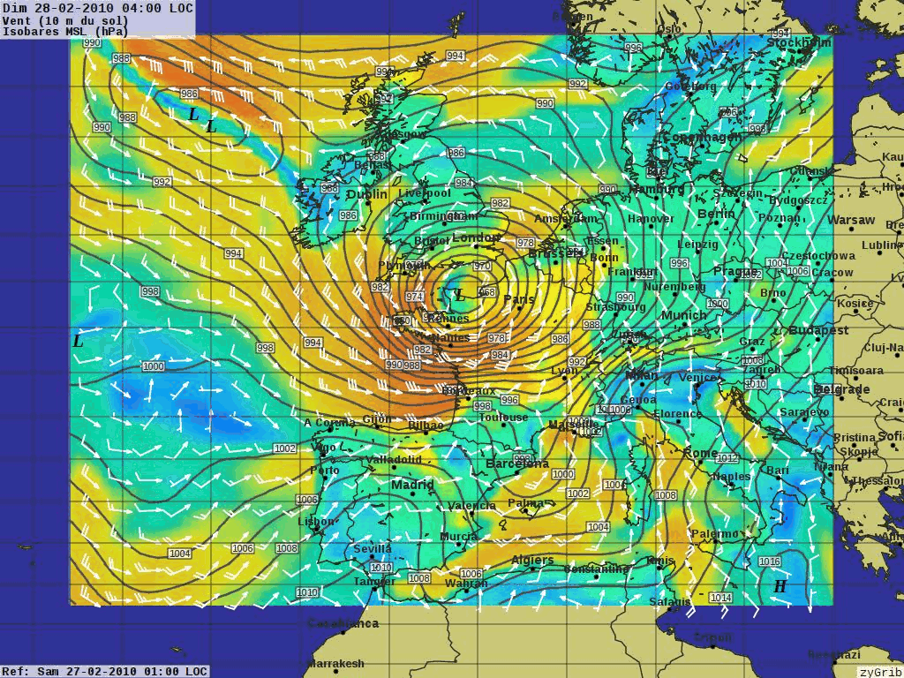

XyGrib¶
Väderprognoser¶
XyGrib är en Grib-filläsare som visualiserar meteorologiska data och ger en off-line-funktion för att analysera väderprognoser eller hindcasts. XyGrib är en fortsättning på mjukvarupaketet zyGrib med ett nytt team av volontärer. Det är avsett att användas som en kapabel väderarbetsstation för alla som har ett seriöst intresse av att undersöka väder. Detta skulle inkludera medlemmar i segelsamhället, privata och sportflygare, jordbrukare, väderfantaster och många fler.
{kind=link}
Kärnfunktioner¶
Visualisering av meteorologiska data från filer i GRIB-format
Automatisk nedladdning av väder- och vågprognoser
Automatisk nedladdning från IAC-data (fleetcode)
Spela upp animationer av 8-dygnsprognoser
Skapa dina egna regionala väderkartor (över hela världen) eller visa en detaljerad kvantitativ prognos för en viss plats.
Plotta vind, tryck, temperatur, luftfuktighet, regn, snö, molntäcke, daggpunkt, våghöjd och data för hög höjd.
Detaljer¶
Webbplats: https://opengribs.org/en
Licens: GNU General Public License (GPL) version 3
Programvaruversion: 2.6.1
Plattformar som stöds: GNU/Linux, Mac OSX, MS Windows